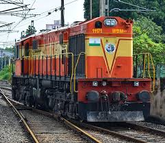
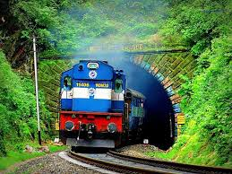
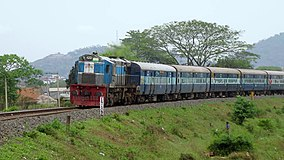
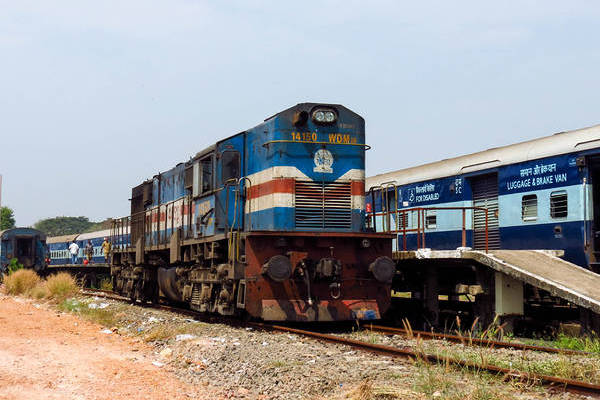
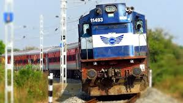
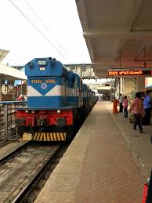
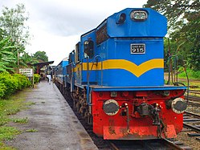
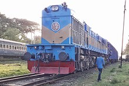

WDM 3 LOCOMOTIVES
WDM 3

The Indian locomotive class WDM-3D is a class of diesel–electric locomotive that was developed in 2003 by Banaras Locomotive Works (BLW), Varanasi for Indian Railways. The model name stands for broad gauge (W), Diesel (D), Mixed traffic (M) engine with 3300 horsepower (3D). The engine is classified WDM-3D though it outputs only 3300 hp and not 3400 hp as the name should suggest. They entered service in 2003. A total of 590+ WDM-3D were built at Banaras Locomotive Works (BLW), Varanasi between 2003 and 2016.
The WDM-3D is one of the most successful locomotives of Indian Railways serving both passenger and freight trains. A few WDM-3D units were exported or gifted to neighboring countries like Sri Lanka and Bangladesh. A significant number of these locomotives are still in use, both on mainline and departmental duties. As of October 2021, most of the locomotives still retain "operational status" on the mainline as WDM-3D, with further examples having been converted from WDM-3B.
History

WDM-3D was developed in by Banaras Locomotive Works and Research Design and Standards Organisation in 2003. It was the result of DLW integrating the best features of EMD GT46MAC and EMD GT46PAC with the ALCO platform.[1][2] The first one was built in July, 2003, numbered #11101. The first few units (five) were all homed at krishnarajapuram but were later transferred to Erode. Serial production started in late 2005 with locos being allotted to almost all major BG diesel sheds.[1] Earlier WDM-3Ds had issues with their electronics which probably led to the development of the WDM-3B in 2005, the same WDM-3D without microprocessor control. The class is considered successful with over 590 units being built. The production has now ceased as DLW has moved to manufacturing more Advanced locos. One unit #11121 has a modified short hood, similar to WDP-4 and is homed at Erode.
Specification

It is the higher-powered version of the Indian locomotive class WDM-3A. These locos have a 3300 hp power pack, with maximum available traction power of 2925 hp. The engine is an enhanced version of the 16-cylinder Alco 251C model with a max. speed of 160 km/h. The bogies are Improved Fabricated (welded) Alco High-Adhesion Co-Co bogies with stem type vertical and lateral dampers in place of 'eye' type which helps reduce wheel slip and maintenance.[1]
The loco features left hand drive, WDG-3A style High Adhesion bogies, air cylinder under foot-board, WDP-4 style fuel tanks, engine doors like WDP-4, marker lights outside cabin doors, electronic horn, High capacity buffers. Components and auxiliaries have been improved with the aim of making the duty schedule longer between maintenance visits to the shed.
WDM 3B

The WDM3B diesel locomotive class was developed in 2005 after the WDM3C and WDM3D. It actually is a variant of the WDM3D, though it shares its power rating with the WDM3A. Only 23 numbers were built (road numbers #14144 to #14167), making them very rare. It has the same engine as the WDM3D, despite having a power deficit of 200 hp. It also looks the same, shares the same body shell, control cabin, undercarriage and the high-adhesion bolsterless bogies of the WDM3D. The difference is that unlike the WDM3D, the WDM3B is not microprocessor controlled but uses something called "E-Type Excitation" for locomotive control. The WDM3B seems to be the result of the Railways trying to cut the WDM3D down to size by eliminating its troublesome features like microprocessor control. But now 3Bs are being converted into 3Ds. WDM3Bs are housed at UP sheds like Lucknow, Gonda, Jhansi, Samastipur, Patratu etc. and many are (were) famously named "Gajraj". The WDM3B does not adhere to the hp-based naming convention as WDM3A already represented 3100 hp. IR just assigned the vacant WDM3B class to this type.
WDM 3E

This was an experimental class developed out of the WDM3D by IR on the ever-lookout for more power, all equipped with High Adhesion bogies and roof-mounted DBRs. However, they never entered serial production. Some suggest that the WDM3E is actually called "WDM3D without Equalizer" or WDM3Ds with 3500 hp power. The known road numbers in service for this class are #11306 to #11311 and #11263. All are marked WDM3D and all are used to haul only freights with speed restricted to 85 km/h. They look exactly like the WDM3D and share all its features.
WDM-3F

The very extremely rare WDM3F was the result of the last and final experiment in IR's drive for more powerful ALCOs. This one is rated 3600 hp and only four were produced (#11287, #11321, #11325, #11342). #11287 has a unique aerodynamic design where the ends taper upwards (picture above). All WDM3Fs are based at Gooty (GY) and share all the features of the WDM3D including roof mounted DBRs except the #11287. Though high powered, this class apparently didn't work out well because after the WDM3F, IR realized that it is futile to try and crank more power of the ALCOs as they were too old and outdated and shifted attention to the EMD. This also marked the beginning of the end of the ALCO domination on Indian Railways.
Sri Lanka

Ten WDM-3D locomotives were purchased by Sri Lanka Railways in 2012. They were the longest and most powerful locomotives owned by Sri Lanka Railways at that time. They were allocated the M10 class.[5] However some specifications are somewhat different for SLR.[6] This class was used for the construction work of Talaimannar and Kankasanthurei railway lines. After extending the northern line to Jaffna and beyond, M10s were used for passenger services including Yal Devi on the northern line. As of August 2020, all units of this class are still in service.
Bangladesh

On 27 July 2020, due to over-aging of existing Bangladesh Railways locomotives, IR gave 10 WDM-3D units for free under its "grant assistance" plan. The Railways has modified the locos to suit the maximum height restrictions in BR and the donated locomotives (6-8 year old) have 28 years of serviceable life left. India formally handed over the locomotives in a virtual ceremony on July 27.[7][8] The vehicles cost an estimated ₹600m ($US 8m) to manufacture.[9] On 24 May 2023, 20 more WDM-3D locomotives were gifted under the same "grant assistance" plan.